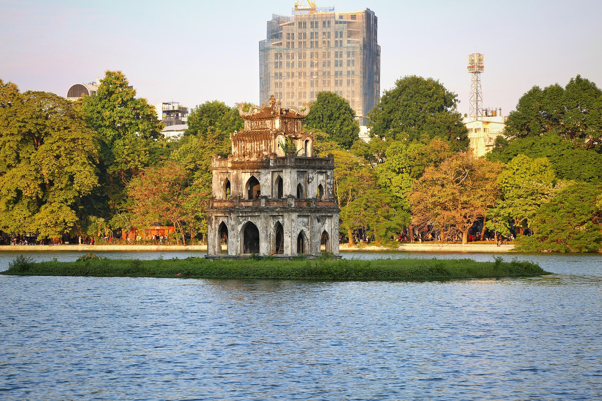
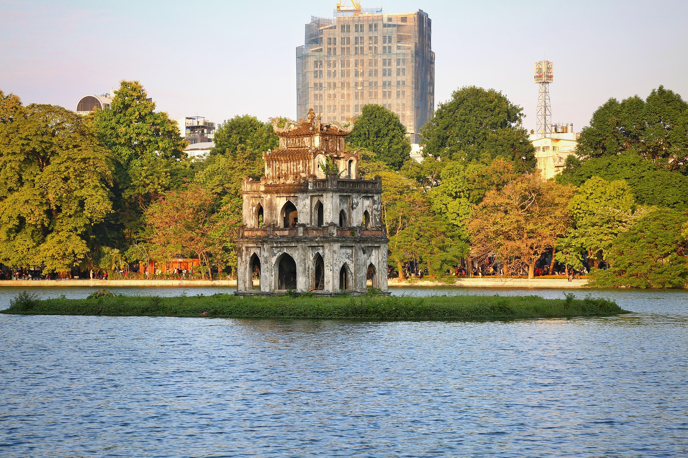

Giới thiệu
Quảng Ninh – vùng đất sở hữu Vịnh Hạ Long, kỳ quan thiên nhiên thế giới được UNESCO công nhận. Nơi đây nổi tiếng với cảnh quan núi đá vôi hùng vĩ, làn nước xanh ngọc và hệ thống hang động tuyệt đẹp.
Du khách sẽ được trải nghiệm du thuyền sang trọng, tham quan các hang động kỳ thú, thưởng thức hải sản tươi sống và khám phá văn hóa địa phương đầy hấp dẫn.
Lịch trình chi tiết
• Ngày 1: Tham quan Vịnh Hạ Long – Hang Sửng Sốt – Đảo Titop • Ngày 2: Du thuyền ngủ đêm – Chèo kayak – Ngắm bình minh trên vịnh • Ngày 3: Thăm Bảo tàng Quảng Ninh – Mua hải sản và đặc sản về làm quà
Hình ảnh tour
 


Đặt Tour Quảng Ninh
Hãy để lại thông tin, chúng tôi sẽ liên hệ ngay cho bạn. Giá trọn gói chỉ 2.999k.